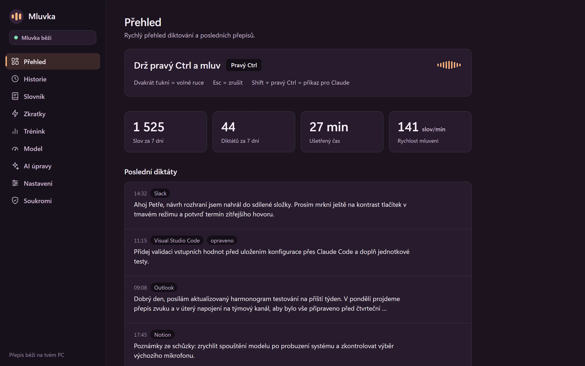
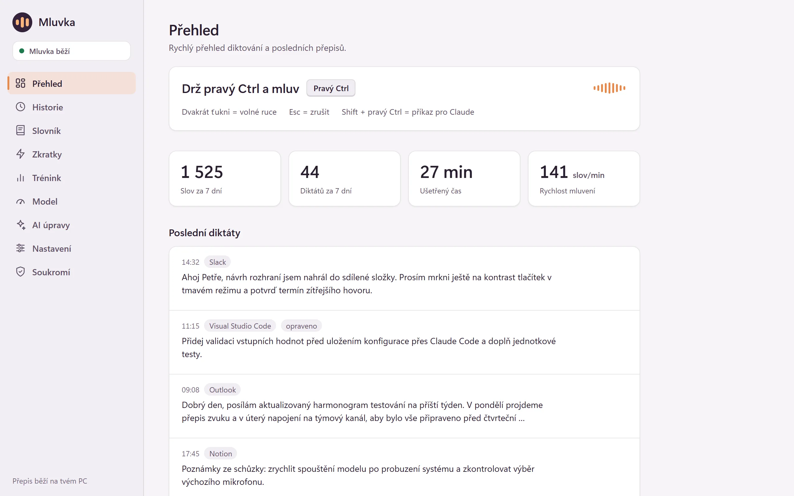

Nepiš.
Mluv.
Podrž klávesu, mluv a pusť. Mluvka přepíše češtinu přímo v tvém počítači a vloží text tam, kde máš kurzor.
Zdarma a open source. Windows 10 a 11, Mac s Apple Silicon (beta).
Mluvka píše do Outlooku, Wordu, Slacku, Claude, Visual Studio Code, Notionu, Teams, Gmailu, Excelu, Chromu, WhatsAppu i Poznámkového bloku.
Mluvíš třikrát rychleji,
než píšeš
Psaní na klávesnici
40 slov za minutu
Mluvení
150 slov za minutu
Běžné tempo psaní a běžné tempo řeči. Minutu diktátu má Mluvka přepsanou a vloženou za 2,6 sekundy.
Zkus si to tady
a pak doopravdy
Podrž tlačítko a pusť. Na počítači funguje i pravý Ctrl na klávesnici, úplně jako v aplikaci.
- Dvakrát ťukni na pravý Ctrl
- Volné ruce, nahrává se bez držení
- Esc
- Zruší diktát, nic se nevloží
- Shift + pravý Ctrl
- Příkaz nad označeným textem, třeba „přepiš to formálněji“
- Alt + Shift + Z
- Vloží poslední přepis znovu
Mluvka ti rozumí,
ne jen slyší
Vycpávky, přeřeknutí a odrážky uhladí napojení na Claude. Zapneš ho vlastním API klíčem a platíš přímo Anthropicu. Bez klíče běží přepis i slovník dál, jen bez uhlazení.
Mluv, jak ti zobák narostl
„Takže ehm, v pondělí, teda ne, v úterý pošlu ten návrh, no, a pak se ozvu.“
V úterý pošlu ten návrh a pak se ozvu.
Z výčtu udělá odrážky
„Za prvé dodělat formulář, za druhé napsat testy, za třetí nasadit.“
- Dodělat formulář
- Napsat testy
- Nasadit
Naučí se tvoje slova
Pošli to klódovi do pátku.
Celá aplikace
v jednom okně
Historie diktátů, vlastní slovník, zkratky a trénink na tvůj hlas. Světlý i tmavý vzhled podle systému.


Kolik jsi tento týden nadiktoval a kolik času to ušetřilo.
Zvuk nikdy neopustí
tvůj počítač
hranice tvého počítače
Tvůj počítač
Zvuk se zpracuje na tvé grafice a dál nejde. Ven putuje jen text, a jen když máš nastavený API klíč ke Claude.
Změřeno,
ne odhadnuto
Měřeno 13. 11. 2026 na notebooku s grafikou RTX 4050, model CzechSpeech q5_0, beam 5. Postup měření je v repozitáři.
Připravujeme
Model, který se učí
od lidí, co ho používají
Chystáme dobrovolné darování ověřených diktátů. Z nich budeme model pravidelně dolaďovat a nová verze se všem stáhne sama. Bez jména a bez e-mailu, se souhlasem, který jde kdykoli odvolat.
Časté otázky
Funguje Mluvka i bez internetu?
Přepis ano, ten běží celý v tvém počítači. Bez internetu se jen nespustí volitelné uhlazení textu přes Claude.
Potřebuju grafiku od NVIDIE?
Ne, ale hodně pomůže. S NVIDIÍ je minuta diktátu přepsaná zhruba za tři sekundy. Bez ní to jede na procesoru a trvá to déle.
Kolik to stojí?
Nic. Mluvka je open source pod licencí MIT a přepisový model je zdarma pro nekomerční použití. Platíš jen za úpravy textu přes Claude, a to přímo Anthropicu podle svého klíče. Bez klíče Mluvka diktuje dál, jen text neuhlazuje.
Posílá Mluvka něco ven?
Zvuk nikdy. Text jen ve dvou případech: při úpravách přes Claude, nebo když si nastavíš vlastní kanál (webhook). Úpravy přes Claude se zapnou, jakmile má Mluvka API klíč, ať už ten z Nastavení, nebo proměnnou prostředí ANTHROPIC_API_KEY. Bez klíče neodchází nic. Kanál je bez vyplněné adresy neaktivní a síťová pojistka nepustí Mluvku nikam jinam.
Umí i jiné jazyky?
Ne. Mluvka je dělaná na češtinu a používá model natrénovaný jen na ní. Proto je v češtině přesnější než obecné vícejazyčné modely.
Co když přepíše slovo špatně?
Oprav ho rovnou tam, kde píšeš. Mluvka si toho všimne a příště to napíše správně. Jména a odborné výrazy můžeš taky přidat do Slovníku.
Nainstaluj to
jedním příkazem
- Windows 10 nebo 11 (64bit), nebo Mac s Apple Silicon a macOS 14+ (beta)
- Grafika NVIDIA pro rychlý přepis (bez ní to jde na procesoru, jen pomaleji)
- Asi 2,5 GB volného místa
Otevři PowerShell, vlož tenhle příkaz a potvrď Enterem. Stáhne Mluvku i přepisový model a vytvoří zástupce na ploše.
irm https://raw.githubusercontent.com/malaveselahranolka/mluvka/main/instalace.ps1 | iex
Na Macu (beta, Apple Silicon, macOS 14 a novější) otevři Terminál a vlož tenhle příkaz. Potřebuje Homebrew a zatím nebyl vyzkoušený na skutečném Macu.
curl -fsSL https://raw.githubusercontent.com/malaveselahranolka/mluvka/main/instalace.sh | bash
Zítra ráno napíšeš
první e-mail nahlas
Stáhne se, nastaví a za pár minut můžeš diktovat. Když se ti to nebude líbit, smažeš to jedním příkazem.
Nainstalovat zdarma